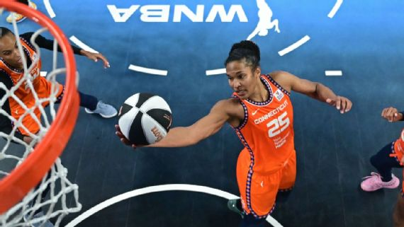

Mujeres en Control: Connecticut Sun es dueño y señor de la WNBA

El Sol es el centro del sistema solar. De igual manera, el Sun se ha establecido como el centro de la WNBA.
El año pasado, el Connecticut Sun estaba a la sombra de Las Vegas Aces y del New York Liberty. Los dos recién formados ‘súper equipos’ de la WNBA no decepcionaron y llegaron hasta un vaticinado duelo en las Finales que culminó en el bicampeonato de las Aces. Sin embargo, luego de los primeros 30 días de la temporada regular, todos persiguen al Sun, con apenas una derrota en los primeros 12 encuentros. Ostenta el mejor récord de la liga, 11-1, incluyendo un arranque perfecto de 9-0. Marca perfecta (4-0) fuera de casa. El lunes Connecticut silenció al Indiana Fever y a Caitlin Clark, limitándola a 10 puntos en una paliza 89-72; el equipo ganador anotó 30 tiros libres. El miércoles el Sun doblegó al Chicago Sky por 83-75 en el marco de la Copa del Comisionado, aguando una noche en que la novata Angel Reese consiguió su cuarto doble doble consecutivo, 20 puntos y 10 rebotes. Alyssa Thomas anotó 10 de sus 20 puntos en el último cuarto rumbo a la victoria; además sumó 7 rebotes y 6 robos aunque cometió 6 pérdidas de balón. Brionna Jones sumó 18 tantos y DeWanna Bonner añadió 16 puntos con 8 tableros.
Tan balanceado es el ataque de Connecticut que la mejor anotadora del equipo, Bonner, es apenas la novena mejor anotadora de la liga ahora mismo, con 18.4 puntos por partido. Thomas (la prometida de Bonner) es cuarta en la WNBA con 10.1 rebotes por juego; la próxima en la lista del equipo es Bonner con promedio de 5.8, empatada en el puesto 20 de la liga. El regreso de Jones ha contribuido a que Connecticut suba como la bruma. Sus 13.5 tantos por encuentro (2da), porcentaje de goles de campo de 59% (1ra), porcentaje de triples de 33.3% (T-2da), 4.5 rebotes por juego (4ta) y 1.4 robos por juego (T-2da) son invaluables.
Alyssa Thomas: la carta fuerte con asignatura pendiente
Donde el Sun sí domina la liga es en las asistencias. Thomas reparte 8.1 asistencias por partido. En su undécima temporada, la alera veterana está viviendo su mejor año en cuanto a rebotes y asistencias. Otra categoría en donde domina una jugadora del Sun es en las pérdidas de balón. Thomas es segunda en toda la liga con 4.4 por partido, superada solo por la novata Clark (5.4). Si Thomas logra reducir las pérdidas de balón, ¿cómo mejoraría el éxito del equipo No. 1? Es como para volarle la cabeza a uno pensar que es posible mejorar el éxito del Sun en la actualidad, pero la entrenadora Stephanie White sin duda está trabajando sobre ello. Después de todo, el Liberty viene fuerte también, sin duda, con marca de 11-2. El Liberty le propinó al Sun su única derrota en lo que va de campaña, 82-75, el sábado. Y el Liberty derrotó al Sun en las semifinales de los últimos playoffs. Es una espinita que se le queda a Thomas y compañía: esta vez quieren ser victoriosas -- y no solo alcanzar las Finales de la WNBA, sino que ganarlas, sea quien sea su rival. Thomas no tendrá tiempo libre en el parón olímpico, ya que fue seleccionada a su primer equipo nacional estadounidense. Pero trabajar con nuevas compañeras y nuevos entrenadores -- la seleccionadora de EE. UU. Cheryl Reeve y los asistentes Mike Thibault y Kara Lawson -- podría ayudarle con su problema de las pérdidas de balón.